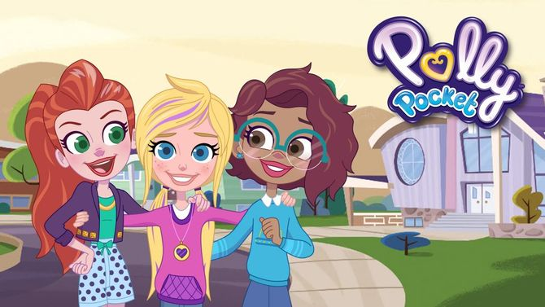

Bienvenidos al micrositio de Lila Draper
¡Hola! Mi nombre es Catherina Vidiri y soy estudiante de la Licenciatura en Diseño Gráfico y Comunicación Visual.
Tanto los sitios web de Lila Draper (en los cuales se presneta el relevamiento y el emprendimiento) como este micrositio, son mi trabajo de 2º Parcial para la materia de Diseño Multimedia II.
En esta página te acompañaremos en un recorrido por lo que fue el proceso de la creación del sitio web llamado Lila Draper, de la serie infantil Polly Pocket, y producida por Discovery Kids. Este proceso se dividió en tres secciones para contar a detalle cada una de estas instancias de diseño.
A continuación se presenta la imagen de portada de la serie televisiva con las protagonistas: Lila, Polly y Shani; y seguido un gif de Lila.
